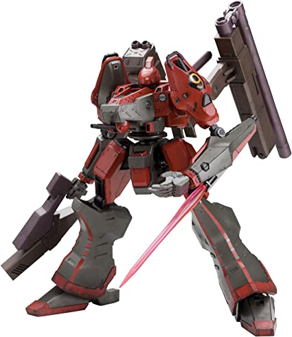
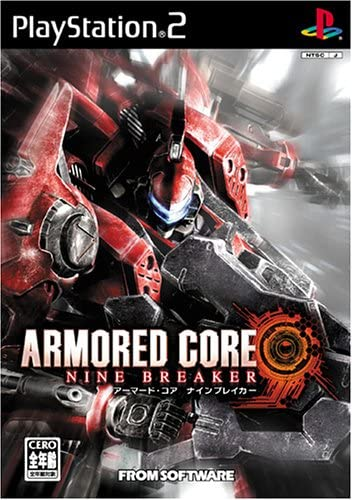

アーマード・コアについて
アーマード・コアシリーズは、1997年7月10日にフロム・ソフトウェアより発売されたARMORED COREを第1作としたロボット3Dアクションゲームのシリーズである。
ゲームシステムとしては、パーツの組み合わせによって自分の望む仕様の兵器（ロボット）が作成でき、各パーツに設定された多様なパラメータを反映した動作を3次元空間内で操作できることが大きな特徴である。 作品ごとに詳細は異なるが、国家による支配体制が崩壊し巨大企業が統治する未来を舞台に、プレイヤーはレイヴン（またはリンクス）と呼ばれる傭兵として、アーマード・コア（AC）と呼ばれる人型機動兵器を操って様々な任務をこなすというストーリーを基本としている。
人気機体２選
ナイン・ボール
「 FROM SOFTWAREのゲーム『アーマード・コア』シリーズに登場する人型兵器。 シリーズを通して『最強』の称号を持つ伝説的存在であり、プレイヤーにとっては「みんなのトラウマ」。 作品世界ではアリーナのトップランカーであるレイヴン「ハスラー・ワン」が搭乗する最強クラスのAC。 赤と黒のツートンカラーに配色されたボディ、ビリヤードの9番ボールをモチーフにしたエンブレム、機体を操るハスラー・ワンの圧倒的な技量と、非情なまでの冷静さなど、機体・搭乗者共に完璧な"トップランカー"として、見る者に強い印象を残していく。 しかし、パイロットのハスラー・ワンの素性を知る者は全くと言っていいほどおらず、その姿を見た者さえいないとされる。」
このようないかにもオタクが好きそうな設定のACでその人気から「ナインブレイカー」という特別な作品も作られた。 「そして前作『ネクサス』から半年後、新作品として本作が発表された。 「ナインブレイカー」とは、初代『アーマード・コア』で登場したラスボス的機体「ナインボール」を制すものという意味をこめた名称である」
ホワイトグリント

ARMORED CORE 4(AC4)およびARMORED CORE for Answer(ACfA)に登場するネクストACの機体名。 機体名こそ同じだが、AC4とACfAでは全くの別機体となっている。（今回はACfA） 非企業勢力ラインアーク所属でカラードランク（実力の順位のようなもの）は9。 ただしこのランク付けは『企業に敵対している組織のリンクスを上位にする訳にはいかない』という企業連への忖度の結果とも言われており、実際にはカラードでもトップクラスの実力を持つと噂される。 搭乗リンクスはUnknown。正体不明ではなく、『Unknown』というリンクスネーム。 ホワイト・グリントの搭乗リンクスは作中一切言葉を発する事はなく、その専属オペレーターであるフィオナ・イェルネフェルトがミッション開始時の礼・警告などの会話を行っている。 機体説明に『単機で企業を壊滅させた』とあり、それを実現したのはAC4主人公(アナトリアの傭兵)と先代ホワイトグリントの使い手ジョシュア・オブライエンの二人だけであり、ジョシュアはリンクス戦争終結後戦死していることから、前作の主人公が乗っていると考察されている。